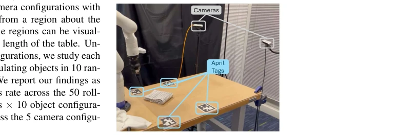
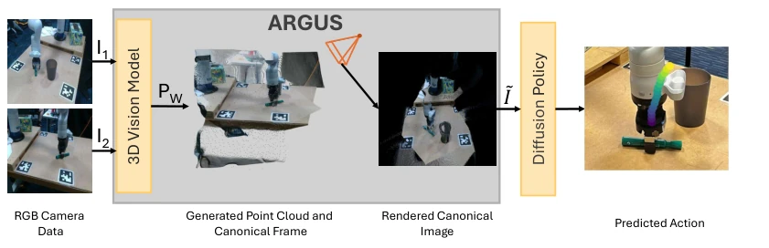
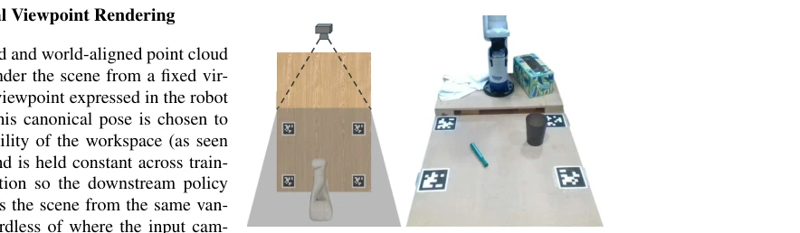
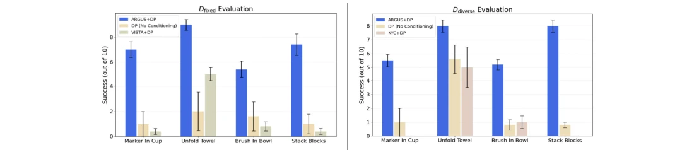
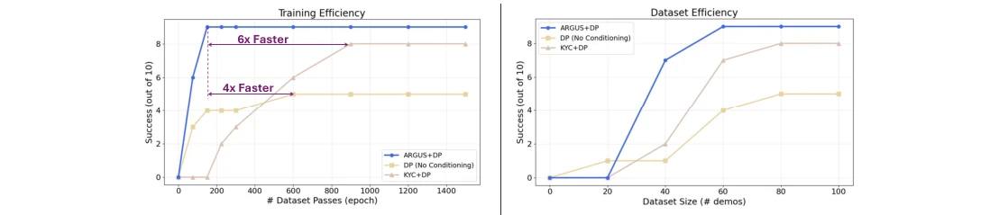
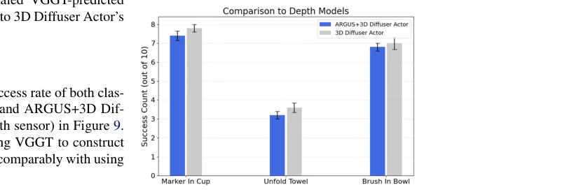

This paper adds a 'filter' to robot vision strategies, forcibly pulling messy camera views back to a standard pose. The name ARGUS is quite grand, truly like Argus watching in all directions. The core idea is to use a large model like VGGT to convert RGB images into point clouds, align them to the world coordinate system, and finally render them into a fixed view for the policy. The benefit is indeed that the policy doesn't need to learn 'where the camera is', only 'where the objects are'. However, the cost is also significant, inference is half a second slower, and fine manipulation is prone to failure. For tasks requiring real-time closed-loop, this latency could be a fatal flaw. Although the paper boasts about reducing learning burden, in actual deployment, a 0.5-second latency is simply a disaster for high-speed grasping. Moreover, large models like VGGT consume VRAM, making them hard to run on edge devices. However, for teaching demonstrations or slow operations, this 'standardize first then decide' trick is indeed smarter than hard-resisting view changes, saving a lot of data volume.
The biggest pain point of vision-motion strategies lies in 'view dependence'. For the same task, changing the camera angle changes the pixel distribution; the policy thinks it learned something new, but actually just memorized the old view. Existing work either relies on simulation data augmentation [10, 11], depends on complex camera ray encoding [17], or relies on depth sensors [24, 25]. Simulation has a Sim2Real gap, ray encoding struggles to guarantee structural assumptions in real large-scale data, and depth sensors are expensive with large hardware differences. Especially for large-scale real datasets like [1, 3], viewpoints are often uncontrolled, leading to poor policy generalization. Although KYC [17] attempts to encode camera extrinsics, it is difficult to guarantee structural assumptions for continuous viewpoints in large-scale real data, making model disentanglement difficult. The authors aim to solve: how to enable the policy to learn the essential geometric structure of the task under uncontrolled viewpoints, rather than rote memorization of pixel positions.

Figure 6: Experimental Setup. Labelled experimental setup highliting variable po- sition cameras and april tags used to cali- brate them.
ARGUS is a preprocessing pipeline that decomposes the problem into two steps: first normalize the viewpoint, then decide. Step 1, utilizing a large 3D vision model like VGGT [28], input multi-view RGB images, generate scene point clouds and coarse extrinsics. There is a pitfall here: the scale output by VGGT is unknown and based on a certain camera frame. Step 2, utilizing known camera extrinsics from the real world (calibrated via AprilTags [29]), calculate the ratio of real baseline length to VGGT estimated baseline, recover metric scale, and transform to the robot base coordinate system. Equation 1 demonstrates how to recover scale through baseline ratio; this step is key, otherwise the point cloud is correct in shape but incorrect in size. Step 3, render the point cloud from a fixed 'standard viewpoint' to generate a canonical image. This canonical image serves as input for the downstream policy (e.g., Diffusion Policy). In this way, the policy only needs to focus on the task space without handling camera pose variations. The entire process does not rely on depth sensors, pure RGB input, but utilizes 3D priors.

Figure 1: Overview of ARGUS. Given two RGB images from any two camera viewpoints, we first construct a 3D point cloud of the scene using a Large Vision Model (ex. VGGT [28]). The point cloud is then aligned and scaled to fit the approximate geometry of the real world before it is used to render a 2D RGB image from a canonical viewpoint. This rendered image is then fed into the downstream visuomotor (ex. Diffusion) policy which is then used to predict actions.

Figure 3: Canonical Viewpoint Selection. The canonical viewpoint is chosen to maximize visi- bility of the workspace and manipulated objects.
实验Experiments
在真实世界四个任务（Put Marker In Cup, Unfold Towel 等）上测试。对比了 KYC [17]（编码相机外参）、VISTA [12]（视图合成增强）和经典 Diffusion Policy。数据集分固定视角和多样视角两种。结果很亮眼：ARGUS 在多样视角训练下，收敛速度比 KYC 快 6 倍，比经典 DP 快 4 倍。在泛化到未见视角时，成功率显著高于基线。甚至不用深度传感器，用 VGGT 重建点云喂给 3D Diffuser Actor [24]，效果也能和直接用深度传感器差不多。不过，精细操作（如小按钮）表现下降，且推理延迟约 0.52s，限制了高频控制应用。
Tested on four real-world tasks (Put Marker In Cup, Unfold Towel, etc.). Compared with KYC [17] (encoding camera extrinsics), VISTA [12] (view synthesis augmentation), and classic Diffusion Policy. Datasets are divided into fixed viewpoint and diverse viewpoint types. Results are impressive: under diverse viewpoint training, ARGUS converges 6 times faster than KYC and 4 times faster than classic DP. When generalizing to unseen viewpoints, success rates are significantly higher than baselines. Even without depth sensors, using VGGT reconstructed point clouds fed into 3D Diffuser Actor [24] yields results comparable to using depth sensors directly. However, performance drops for fine manipulation (e.g., small buttons), and inference latency is about 0.52s, limiting high-frequency control applications.
Figure 4: EvaluationTasks. Real-world evaluation across four manipulation tasks.

Figure 7: Average success rates across five novel multi-view camera configurations. (Left) Methods are trained on single-viewpoint configuration datasets and evaluated for generalization to unseen viewpoints. (Right) Methods are trained on viewpoint-diverse datasets and evaluated under the same novel, previously unseen viewpoints.

Figure 8: Training and sample efficiency across methods. (Left) Training efficiency measured by the number of dataset passes required for each method to converge (Right) Sample efficiency, showing performance as a function of number of training samples.

Figure 9: Success rate comparison between our method and a depth-based policy baseline.